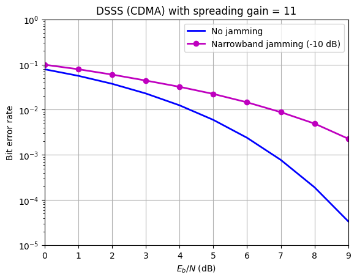
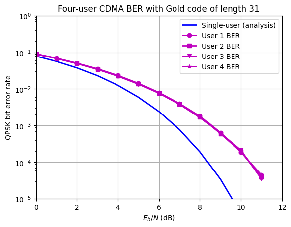
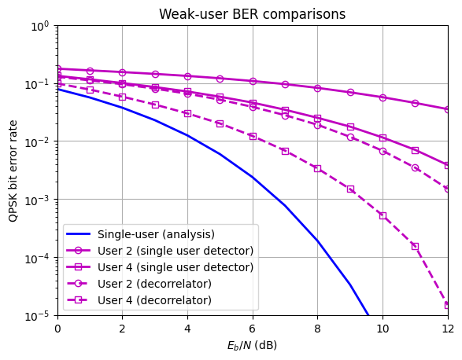
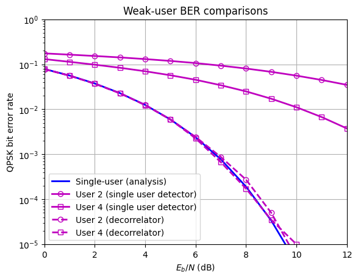

10.9.1 Computer Exercise 10.1: FHSS FSK under Partial Band Jamming#
* Note: Refer to the description from textbook Section 10.9 *
import numpy as np
from scipy.sparse import coo_matrix
import matplotlib.pyplot as plt
from scipy.signal import welch, get_window
from scipy.special import erfc
''' Save the following as ExFHSS.py
This program provides simulation for FHSS signaling using non-coherent detection
of FSK. The jammer will jam 1 of the L frequency bands and can be turned on or
off by inputting jamming=1 or 0 Non-coherent MFSK detection only needs to
compare the magnitude of each frequency bin.'''
n = 10000 # Number of data symbols in the simulation
L = 8 # Number of frequency bands
Lh = 1 # Number of hops per symbol (bit)
m = 1 # Number of users
s_data = np.round(np.random.rand(n, m)) # Generating information bits
# Turn partial band jamming on or off to test BER via keyboard
jamming = int(input('jamming=? (Enter 1 for Yes, 0 for No)'))
# Generating random phases on the two frequencies
xbase1 = np.exp(1j * 2 * np.pi * np.random.rand(Lh * n, 1))
xbase0 = np.exp(1j * 2 * np.pi * np.random.rand(Lh * n, 1))
# Modulating two orthogonal frequencies
xmodsig = np.concatenate([np.kron(s_data, np.ones((Lh, 1))) * xbase1,
np.kron(1 - s_data, np.ones((Lh, 1))) * xbase0], axis=1)
del xbase0, xbase1
# Generating a random hopping sequence n * Lh long
Phop = np.random.randint(0, L, Lh * n)
Xsiga =coo_matrix((xmodsig[:,0],(np.arange(Lh*n),Phop)),shape=(Lh*n,L)).toarray()
Xsigb =coo_matrix((xmodsig[:,1],(np.arange(Lh*n),Phop)),shape=(Lh*n,L)).toarray()
# Generating noise sequences for both frequency channels
noise1 = np.random.randn(Lh * n) + 1j * np.random.randn(Lh * n)
noise2 = np.random.randn(Lh * n) + 1j * np.random.randn(Lh * n)
Nsiga = coo_matrix((noise1, (np.arange(Lh*n), Phop)), shape=(Lh*n, L)).toarray()
Nsigb = coo_matrix((noise2, (np.arange(Lh*n), Phop)), shape=(Lh*n, L)).toarray()
del noise1, noise2, xmodsig
BER = []; BER_az = []; Eb2N = [] # building output arrays for plotting
# Add a jammed channel (randomly picked)
if jamming:
nch = np.random.randint(0, L)
Xsiga[:, nch] = 0; Xsigb[:, nch] = 0
Nsiga[:, nch] = 0; Nsigb[:, nch] = 0
# Generating the channel noise (AWGN)
for i in range(10):
Eb2N.append(i+1) # (Eb/N in dB)
Eb2N_num = 10**(Eb2N[i]/10) # Eb/N in numeral
Var_n = 1/(2*Eb2N_num) # 1/SNR is the noise variance
signois = np.sqrt(Var_n) # standard deviation
ych1 = Xsiga + signois * Nsiga # AWGN complex channels
ych2 = Xsigb + signois * Nsigb # AWGN channels
# Non-coherent detection
dec = np.zeros(n)
for kk in range(n):
Yvec1 = np.zeros(Lh,dtype=complex); Yvec2 = np.zeros(Lh,dtype=complex)
for kk2 in range(Lh):
Yvec1[kk2] = ych1[kk*Lh+kk2, Phop[kk*Lh+kk2]]
Yvec2[kk2] = ych2[kk*Lh+kk2, Phop[kk*Lh+kk2]]
ydim1 = Yvec1.dot(np.conjugate(Yvec1))
ydim2 = Yvec2.dot(np.conjugate(Yvec2))
dec[kk] = (ydim1 > ydim2)
BER.append(np.sum(dec != s_data.flatten()) / n); #calculating BER
BER_az.append(0.5*np.exp(-Eb2N_num/2)); # Compare against analytical BER
BER = np.array(BER)
BER[BER==0] = np.nan # replace 0 with 'nan' to avoid 0 when plotting in logscale
figber=plt.semilogy(Eb2N,BER_az,'b-',Eb2N,BER,'m-o',linewidth=2)
plt.legend(['Analytical BER w/o jamming', 'FHSS simulation (L=8)'])
fx=plt.xlabel(r'$E_b/N$ (dB)'); plt.grid()
fy=plt.ylabel('Bit error rate',fontsize=11)
plt.xlim(1,10); plt.show()
---------------------------------------------------------------------------
StdinNotImplementedError Traceback (most recent call last)
Cell In[2], line 13
10 s_data = np.round(np.random.rand(n, m)) # Generating information bits
12 # Turn partial band jamming on or off to test BER via keyboard
---> 13 jamming = int(input('jamming=? (Enter 1 for Yes, 0 for No)'))
15 # Generating random phases on the two frequencies
16 xbase1 = np.exp(1j * 2 * np.pi * np.random.rand(Lh * n, 1))
File /opt/hostedtoolcache/Python/3.10.18/x64/lib/python3.10/site-packages/ipykernel/kernelbase.py:1274, in Kernel.raw_input(self, prompt)
1272 if not self._allow_stdin:
1273 msg = "raw_input was called, but this frontend does not support input requests."
-> 1274 raise StdinNotImplementedError(msg)
1275 return self._input_request(
1276 str(prompt),
1277 self._parent_ident["shell"],
1278 self.get_parent("shell"),
1279 password=False,
1280 )
StdinNotImplementedError: raw_input was called, but this frontend does not support input requests.

10.9.2 Computer Exercise 10.2: DSSS Transmission of QPSK#
Note: text from Section 10.9 skipped
'''This ExDSSS.py provides simulation for DS-CDMA signaling using coherent QAM
detection. To illustrate the CDMA spreading effect, a single user is spread by
PN sequence of different lengths. Jamming is added as a narrowband;
Changing spreading gain Lc '''
Ldata = 20000 # data length in simulation; Must be divisible by 8
Lc = 11 # spreading factor vs data rate, can also use the shorter Lc=7
# Generate QPSK modulation symbols
data_sym = 2 * np.round(np.random.rand(Ldata, 1)) - 1 + \
1j * (2 * np.round(np.random.rand(Ldata, 1)) - 1)
jam_data = 2 * np.round(np.random.rand(Ldata, 1)) - 1 + \
1j * (2 * np.round(np.random.rand(Ldata, 1)) - 1)
# Generating a spreading code
pcode = np.array([1, 1, 1, -1, -1, -1, 1, -1, -1, 1, -1]).reshape((-1, 1))
# Now we spread signal
x_in = np.kron(data_sym, pcode).flatten()
# Signal power of the channel input is 2*Lc;
SIR = 10 # SIR in dB. Change this value for different jamming strength
Pj = 2 * Lc / (10 ** (SIR / 10)) # Jamming power is relative
# Generate noise (AWGN) with power = 2
noiseq = np.random.randn(Ldata * Lc, 1) + 1j * np.random.randn(Ldata * Lc, 1)
# Add jamming sinusoid sampling frequency is fc = Lc
jam_mod = np.kron(jam_data, np.ones((Lc, 1))); del jam_data
jammer = np.sqrt(Pj / 2) * jam_mod * np.exp(1j * 2 * \
np.pi * 0.12 * np.arange(1, Ldata * Lc + 1).reshape(-1,1))
jammer = jammer.flatten(); del jam_mod
fs = 4096
the_hamming_window = get_window('hamming', np.floor(len(x_in)/4.5).astype(int))
# Same as MATLAB, default Length of the FFT (nfft) is the greater of 256 or
# the next power of 2 greater than the length of the segments.
nfft = max(256, 2**np.ceil(np.log2(len(the_hamming_window))))
x, P = welch(x_in,fs=1,window=the_hamming_window,nfft = nfft,
scaling='density',return_onesided=False,detrend=False)
x = np.fft.fftshift(x)*Lc
fig1 = plt.figure(); fig1.subplots_adjust(hspace=0.5,wspace=0.4)
plt.semilogy(x, np.fft.fftshift(P)/Lc,'b')
plt.axis([-Lc/2, Lc/2, 1.e-2, 1.e2]); plt.grid()
plt.xlabel(r'frequency (in unit of $1/T_s$)',fontsize=11)
plt.ylabel('CDMA signal PSD')
x, P = welch(jammer+x_in,fs=1,window=the_hamming_window,
nfft = nfft,scaling='density',return_onesided=False,detrend=False)
x = np.fft.fftshift(x)*Lc
fig2 = plt.figure(); fig2.subplots_adjust(hspace=0.5,wspace=0.4)
plt.semilogy(x, np.fft.fftshift(P)/Lc,'b'); plt.grid()
plt.axis([-Lc/2, Lc/2, 1.e-2, 1.e2])
plt.xlabel(r'frequency (in unit of $1/T_s$)',fontsize=11)
plt.ylabel('CDMA signal + narrowband jammer PSD',fontsize=11)
Text(0, 0.5, 'CDMA signal + narrowband jammer PSD')
BER = []; BER_az = []; Eb2N = [] # Computing BER for given SIR
for i in range(10):
Eb2N.append(i) # (Eb/N in dB)
Eb2N_num = 10 ** (Eb2N[i] / 10) # Eb/N in numeral
Var_n = Lc / (2 * Eb2N_num) # 1/SNR is the noise variance
signois = np.sqrt(Var_n) # standard deviation
awgnois = signois * noiseq # AWGN
# Add noise to signals at the channel output
y_out = x_in + awgnois.flatten() + jammer
Y_out = np.reshape(y_out, (Ldata, Lc), order='C')
del y_out, awgnois
# Despread first
z_out = np.matmul(Y_out,pcode)
# Decision based on the sign of the samples
dec1 = np.sign(np.real(z_out)) + 1j * np.sign(np.imag(z_out))
# Now compare against the original data to compute BER
BER.append(np.sum([np.real(data_sym) != np.real(dec1), \
np.imag(data_sym) != np.imag(dec1)]) / (2 * Ldata))
BER_az.append(0.5 * erfc(np.sqrt(Eb2N_num))) # analytical BER
BER = np.array(BER)
BER[BER==0] = np.nan # replace 0 in BER with 'nan' to mask 0 in logscale plot
fig3 = plt.figure(); fig3.subplots_adjust(hspace=0.5,wspace=0.4)
figber=plt.semilogy(Eb2N,BER_az,'b-',Eb2N,BER,'m-o',linewidth=2)
plt.axis([0, 9, 0.99e-5, 1.])
plt.legend(['No jamming','Narrowband jamming (-10 dB)'])
plt.xlabel(r'$E_b/N$ (dB)'); plt.ylabel('Bit error rate')
plt.title('DSSS (CDMA) with spreading gain = 11'); plt.grid()
plt.show()



10.9.3 Computer Exercise 10.3: Multiuser DS-CDMA System#
Note: Note: Refer to description from textbook Section 10.9
# This cell generates a table of 4 Gold sequence with length 31 each.
GPN=np.array([[1, 1, 1, -1],
[-1, 1, -1, 1],
[-1, -1, 1, 1],
[1, 1, -1, -1],
[-1, -1, -1, -1],
[1, 1, 1, 1],
[1, 1, -1, -1],
[-1, -1, -1, 1],
[-1, 1, -1, -1],
[1, -1, -1, 1],
[-1, -1, 1, 1],
[1, 1, -1, 1],
[1, -1, -1, -1],
[-1, 1, 1, 1],
[1, -1, 1, 1],
[-1, 1, 1, -1],
[-1, -1, 1, -1],
[-1, 1, 1, -1],
[1, 1, 1, -1],
[1, -1, 1, 1],
[1, -1, 1, -1],
[1, 1, -1, -1],
[1, 1, 1, 1],
[1, 1, -1, -1],
[-1, -1, -1, -1],
[1, 1, -1, 1],
[1, -1, -1, -1],
[-1, 1, -1, 1],
[1, 1, -1, -1],
[1, 1, 1, 1],
[1, 1, 1, 1]])
# This cell tests multiuser DS-CDMA signaling using coherent QPSK for 4 users
Ldata = 200000 # data length in simulation; Must be divisible by 8
Lc = 31 # spreading factor vs data rate
# User number = 4; Generate QPSK modulation symbols
data_sym = (2 * np.round(np.random.rand(Ldata, 4)) - 1) + \
1j * (2 * np.round(np.random.rand(Ldata, 4)) - 1)
# Select 4 spreading codes (Gold Codes of Length 11)
pcode = GPN
# Spreading codes are now in matrix pcode of 31x4
PowerMat = np.diag(np.sqrt([1, 1, 1, 1]))
pcodew = np.dot(pcode, PowerMat)
# Now spread
x_in =np.kron(data_sym[:,0], pcodew[:,0])+ np.kron(data_sym[:,1], pcodew[:,1])+\
np.kron(data_sym[:,2], pcodew[:,2])+ np.kron(data_sym[:,3], pcodew[:,3])
# Signal power of the channel input is 2*Lc
# Generate noise (AWGN)
noiseq = np.random.randn(Ldata * Lc)+1j * np.random.randn(Ldata * Lc) # Power=2
number_of_iterations = 12
BER1 = np.zeros((number_of_iterations))
BER2 = np.zeros((number_of_iterations))
BER3 = np.zeros((number_of_iterations))
BER4 = np.zeros((number_of_iterations))
BER_az = np.zeros((number_of_iterations))
Eb2N = []
for i in range(number_of_iterations):
Eb2N.append(i) # (Eb/N in dB)
Eb2N_num = 10 ** (Eb2N[i] / 10) # Eb/N in numeral
Var_n = Lc / (2 * Eb2N_num) # 1/SNR is the noise variance
signois = np.sqrt(Var_n) # standard deviation
awgnois = signois * noiseq # AWGN
# Add noise to signals at the channel output
y_out = x_in + awgnois
Y_out = np.reshape(y_out, (Ldata, Lc))
del y_out, awgnois
z_out = np.dot(Y_out, pcode) # Despread first
# Decision based on the sign of the samples
dec = np.sign(np.real(z_out)) + 1j * np.sign(np.imag(z_out))
# Now compare against the original data to compute BER
BER1[i] = np.sum([np.real(data_sym[:, 0]) != np.real(dec[:, 0]),
np.imag(data_sym[:, 0]) != np.imag(dec[:, 0])]) / (2 * Ldata)
BER2[i] = np.sum([np.real(data_sym[:, 1]) != np.real(dec[:, 1]),
np.imag(data_sym[:, 1]) != np.imag(dec[:, 1])]) / (2 * Ldata)
BER3[i] = np.sum([np.real(data_sym[:, 2]) != np.real(dec[:, 2]),
np.imag(data_sym[:, 2]) != np.imag(dec[:, 2])]) / (2 * Ldata)
BER4[i] = np.sum([np.real(data_sym[:, 3]) != np.real(dec[:, 3]),
np.imag(data_sym[:, 3]) != np.imag(dec[:, 3])]) / (2 * Ldata)
BER_az[i] = 0.5 * erfc(np.sqrt(Eb2N_num)) # analytical
# Replace 0 in BER with 'nan' when plotting in logscale
BER1[BER1==0] = np.nan; BER2[BER2==0] = np.nan
BER3[BER3==0] = np.nan; BER4[BER4==0] = np.nan
fig1 = plt.figure()
fig1.subplots_adjust(hspace=0.5,wspace=0.4)
figber=plt.semilogy(Eb2N,BER_az,'b-', Eb2N,BER1,'m-o', Eb2N,BER2,'m-s',
Eb2N,BER3,'m-v', Eb2N,BER4,'m-*', linewidth=2)
plt.legend(['Single-user (analysis)','User 1 BER','User 2 BER', 'User 3 BER','User 4 BER'])
plt.axis([0, 12, 0.99e-5, 1]); plt.grid()
plt.xlabel(r'$E_b/N$ (dB)'); plt.ylabel('QPSK bit error rate')
plt.title('Four-user CDMA BER with Gold code of length 31')
plt.show()


10.9.4 Computer Exercise 10.4: Multiuser CDMA Detection in Near-Far Environment#
Note: Refer to description from textbook Section 10.9
'''This cell provides simulation for multiuser CDMA system with near-far effect
due to user Tx power differences/variations.'''
# Linear Decorrelator receivers are applied to mitigate the near-far effect
import numpy as np
from scipy.linalg import pinv
from scipy.special import erfc
Ldata = 100000 # data length in simulation; Must be divisible by 8
Lc = 31 # spreading factor vs data rate
# Generate QPSK modulation symbols
data_sym = (2 * np.round(np.random.rand(Ldata, 4)) - 1) + \
1j * (2 * np.round(np.random.rand(Ldata, 4)) - 1)
pcode = GPN # Select 4 spreading codes (Gold Codes of Length 11)
# Spreading codes are now in matrix pcode of 31x4
PowerMat = np.diag(np.sqrt([10, 1, 5, 1]))
pcodew = np.matmul(pcode, PowerMat); Rcor = np.matmul(pcodew.T, pcodew)
Rinv = pinv(Rcor)
# Now spread the signals
x_in = np.kron(data_sym[:,0],pcodew[:,0])+np.kron(data_sym[:,1],pcodew[:,1])+\
np.kron(data_sym[:, 2], pcodew[:, 2])+np.kron(data_sym[:,3],pcodew[:,3])
# Since signal power of the channel input is 2*Lc, generate noise (AWGN)
noiseq = np.random.normal(0, 1, (Ldata * Lc)) + 1j * \
np.random.normal(0, 1, (Ldata * Lc)) # Power is 2
number_of_iterations = 13
BERb2 = np.zeros((number_of_iterations))
BERa2 = np.zeros((number_of_iterations))
BERb4 = np.zeros((number_of_iterations))
BERa4 = np.zeros((number_of_iterations))
BER_az = np.zeros((number_of_iterations))
Eb2N = []
for i in range(number_of_iterations):
Eb2N.append(i) # (Eb/N in dB)
Eb2N_num = 10**(Eb2N[i]/10) # Eb/N in numeral
Var_n = Lc / (2 * Eb2N_num) # 1/SNR is the noise variance
signois = np.sqrt(Var_n) # standard deviation
awgnois = signois * noiseq # AWGN
# Add noise to signals at the channel output
y_out = x_in + awgnois
Y_out = np.reshape(y_out, (Ldata, Lc))
del y_out, awgnois
# Despread first and apply decorrelator Rinv
z_out = np.matmul(Y_out, pcode)
del Y_out
z_dcr = np.matmul(z_out, Rinv) # decorrelator output
# Decision based on the sign of the single receivers
dec1 = np.sign(np.real(z_out)) + 1j * np.sign(np.imag(z_out))
dec2 = np.sign(np.real(z_dcr)) + 1j * np.sign(np.imag(z_dcr))
# Now compare against the original data to compute BER of user 2
# and user 4 (weaker ones).
BERa2[i] =np.sum([np.real(data_sym[:,1]) !=np.real(dec1[:, 1]),
np.imag(data_sym[:,1]) !=np.imag(dec1[:, 1])])/(2*Ldata)
BERa4[i] =np.sum([np.real(data_sym[:,3]) !=np.real(dec1[:, 3]),
np.imag(data_sym[:,3]) !=np.imag(dec1[:, 3])])/(2*Ldata)
BERb2[i] =np.sum([np.real(data_sym[:,1]) !=np.real(dec2[:, 1]),
np.imag(data_sym[:,1]) !=np.imag(dec2[:, 1])])/(2*Ldata)
BERb4[i] =np.sum([np.real(data_sym[:,3]) !=np.real(dec2[:, 3]),
np.imag(data_sym[:,3]) !=np.imag(dec2[:, 3])])/(2*Ldata)
BER_az[i]=0.5 * erfc(np.sqrt(Eb2N_num)) # analytical
fig1 = plt.figure()
fig1.subplots_adjust(hspace=0.5,wspace=0.4)
figber=plt.semilogy(Eb2N,BER_az,'b-', Eb2N,BERa2,'m-o',Eb2N,BERa4,'m-s',
Eb2N,BERb2,'m--o',Eb2N,BERb4,'m--s',mfc='none',linewidth=2)
plt.legend(['Single-user (analysis)','User 2 (single user detector)',
'User 4 (single user detector)','User 2 (decorrelator)',
'User 4 (decorrelator)'])
plt.axis([0, 12, 0.99e-5, 1.])
plt.xlabel(r'$E_b/N$ (dB)');plt.ylabel(r'QPSK bit error rate')
plt.title('Weak-user BER comparisons');plt.grid()
plt.show()


'''This cell provides simulation for multiuser CDMA system with near-far effect
due to user Tx power differences/variations.'''
# Decision feedback receivers are applied to mitigate the near-far effect
import numpy as np
from scipy.special import erfc
Ldata = 200000 # data length in simulation; Must be divisible by 8
Lc = 31 # spreading factor vs data rate
# Generate QPSK modulation symbols
np.random.seed(10)
data_sym = (2 * np.round(np.random.rand(Ldata, 4)) - 1) + \
1j * (2 * np.round(np.random.rand(Ldata, 4)) - 1)
# Select 4 spreading codes (Gold Codes of Length 11)
pcode = GPN # assuming GPN is defined elsewhere
# Spreading codes are now in matrix pcode of 31x4
PowerMat = np.diag(np.sqrt([10, 1, 5, 1]))
pcodew = np.dot(pcode, PowerMat)
Rcor = np.dot(pcodew.T, pcodew)
# Now spread
x_in = np.kron(data_sym[:, 0], pcodew[:, 0]) + np.kron(data_sym[:, 1], pcodew[:, 1]) + \
np.kron(data_sym[:, 2], pcodew[:, 2]) + np.kron(data_sym[:, 3], pcodew[:, 3])
# Signal power of the channel input is 2*Lc
# Generate noise (AWGN)
noiseq = np.random.randn(Ldata * Lc) + 1j * np.random.randn(Ldata * Lc) # Power is 2
number_of_iterations = 13
BER_c2 = np.zeros((number_of_iterations));BER2 = np.zeros((number_of_iterations))
BER_c4 = np.zeros((number_of_iterations));BER4 = np.zeros((number_of_iterations))
BER_az = np.zeros((number_of_iterations));Eb2N = []
for i in range(number_of_iterations):
Eb2N.append(i) # (Eb/N in dB)
Eb2N_num = 10 ** (Eb2N[i] / 10) # Eb/N in numeral
Var_n = Lc / (2 * Eb2N_num) # 1/SNR is the noise variance
signois = np.sqrt(Var_n) # standard deviation
awgnois = signois * noiseq # generate AWGN
# Add noise to signals at the channel output
y_out = x_in + awgnois
Y_out = np.reshape(y_out, (Ldata, Lc))
del y_out, awgnois
# Despread first
z_out = np.dot(Y_out, pcode)
del Y_out
# Decision based on the sign of the single receivers
dec = np.sign(np.real(z_out)) + 1j * np.sign(np.imag(z_out))
# Decision based on the sign of the samples
dec1 = np.sign(np.real(z_out[:, 0])) + 1j * np.sign(np.imag(z_out[:, 0]))
z_fk1 = z_out - dec1.reshape(-1, 1) * Rcor[0, :]
dec3 = np.sign(np.real(z_fk1[:, 2])) + 1j * np.sign(np.imag(z_fk1[:, 2]))
z_fk2 = z_fk1 - dec3.reshape(-1, 1) * Rcor[2, :]
dec2 = np.sign(np.real(z_fk2[:, 1])) + 1j * np.sign(np.imag(z_fk2[:, 1]))
z_fk3 = z_fk2 - dec2.reshape(-1, 1) * Rcor[1, :]
dec4 = np.sign(np.real(z_fk3[:, 3])) + 1j * np.sign(np.imag(z_fk3[:, 3]))
# Now compare against the original data to compute BER
BER_c2[i] = np.sum([np.real(data_sym[:, 1]) != np.real(dec[:, 1]),
np.imag(data_sym[:, 1]) != np.imag(dec[:,1])])/(2*Ldata)
BER2[i] = np.sum([np.real(data_sym[:, 1]) != np.real(dec2),
np.imag(data_sym[:, 1]) != np.imag(dec2)]) / (2 * Ldata)
BER_c4[i] = np.sum([np.real(data_sym[:, 3]) != np.real(dec[:, 3]),
np.imag(data_sym[:, 3]) != np.imag(dec[:,3])])/(2*Ldata)
BER4[i] = np.sum([np.real(data_sym[:, 3]) != np.real(dec4),
np.imag(data_sym[:, 3]) != np.imag(dec4)]) / (2 * Ldata)
BER_az[i] = 0.5 * erfc(np.sqrt(Eb2N_num)) # analytical
# Replace 0 in BER with 'nan' so that 0 values can be masked when plotting in logscale
BER_c2[BER_c2==0] = np.nan
BER2[BER2==0] = np.nan
BER_c4[BER_c4==0] = np.nan
BER4[BER4==0] = np.nan
del z_fk1, z_fk2, z_fk3, dec1, dec3, dec2, dec4, x_in, noiseq
fig2 = plt.figure()
fig2.subplots_adjust(hspace=0.5,wspace=0.4)
figber=plt.semilogy(Eb2N,BER_az,'b-', Eb2N,BER_c2,'m-o',Eb2N,BER_c4,'m-s',
Eb2N,BER2,'m--o',Eb2N,BER4,'m--s',mfc='none',linewidth=2)
plt.legend(['Single-user (analysis)','User 2 (single user detector)',
'User 4 (single user detector)','User 2 (decorrelator)',
'User 4 (decorrelator)'])
plt.axis([0, 12, 0.99e-5, 1.])
plt.xlabel(r'$E_b/N$ (dB)');plt.ylabel(r'QPSK bit error rate')
plt.title('Weak-user BER comparisons');plt.grid()
plt.show()

Note: text on p.739-740 skipped